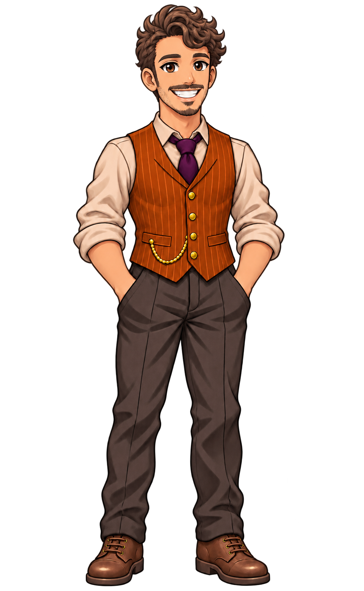

17. standing_shrug_south (resigned) · tier 1
Save as: kwinn_standing_shrug_south_resigned.png

reference 1: approved base model
assets/characters/poses/kwinn/masters/model-review-02/kwinn-model-v1.png reference 2: chris same-pose composition
reference 2: chris same-pose composition
assets/characters/poses/chris/exports/murderer-reveal/chris_standing_shrug_south_resigned.png
18. standing_startle_east (surprised) · tier 1
Save as: kwinn_standing_startle_east_surprised.png
reference 1: approved base model
assets/characters/poses/kwinn/masters/model-review-02/kwinn-model-v1.png reference 2: chris same-pose composition
reference 2: chris same-pose composition
assets/characters/poses/chris/exports/east/chris_standing_startle_east_surprised.png
19. standing_startle_south (surprised) · tier 1
Save as: kwinn_standing_startle_south_surprised.png
reference 1: approved base model
assets/characters/poses/kwinn/masters/model-review-02/kwinn-model-v1.png reference 2: chris same-pose composition
reference 2: chris same-pose composition
assets/characters/poses/chris/exports/south/chris_standing_startle_south_surprised.png
20. standing_startle_west (surprised) · tier 1
Save as: kwinn_standing_startle_west_surprised.png
reference 1: approved base model
assets/characters/poses/kwinn/masters/model-review-02/kwinn-model-v1.png reference 2: chris same-pose composition
reference 2: chris same-pose composition
assets/characters/poses/chris/exports/west/chris_standing_startle_west_surprised.png
21. standing_talk_east (friendly) · tier 1
Save as: kwinn_standing_talk_east_friendly.png
reference 1: approved base model
assets/characters/poses/kwinn/masters/model-review-02/kwinn-model-v1.png reference 2: chris same-pose composition
reference 2: chris same-pose composition
assets/characters/poses/chris/exports/east/chris_standing_talk_east_friendly.png
22. standing_talk_north (friendly) · tier 1
Save as: kwinn_standing_talk_north_friendly.png
reference 1: approved base model
assets/characters/poses/kwinn/masters/model-review-02/kwinn-model-v1.png reference 2: chris same-pose composition
reference 2: chris same-pose composition
assets/characters/poses/chris/exports/north/chris_standing_talk_north_friendly.png
23. standing_talk_south (friendly) · tier 1
Save as: kwinn_standing_talk_south_friendly.png
reference 1: approved base model
assets/characters/poses/kwinn/masters/model-review-02/kwinn-model-v1.png reference 2: chris same-pose composition
reference 2: chris same-pose composition
assets/characters/poses/chris/exports/south/chris_standing_talk_south_friendly.png
24. standing_talk_west (friendly) · tier 1
Save as: kwinn_standing_talk_west_friendly.png
reference 1: approved base model
assets/characters/poses/kwinn/masters/model-review-02/kwinn-model-v1.png reference 2: chris same-pose composition
reference 2: chris same-pose composition
assets/characters/poses/chris/exports/west/chris_standing_talk_west_friendly.png